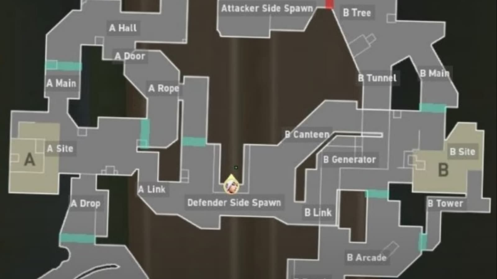

~~~~~~~~~~~~~~~~~~~~ Mapas ~~~~~~~~~~~~~~~~~~~~
~~~~~~~~~~~~~~~~~~~~ Funcionamento dos mapas ~~~~~~~~~~~~~~~~~~~~
Antes de começar a jogar, precisamos entender como os mapas funcionam.
Em cada mapa existem pontos específicos para que seja plantado a spike, esses pontos são chamados de bombs. Os bombs são os únicos lugares do mapa em que será possível plantar a spike.
Para localizar os bombs nos mapas é só olhar para o minimap que fica no canto superios esquerdo da tela, nele aparecerá dois pontos destacados, com as letras A ou B. Essas letras servem para identificar os bombs, ajudando na hora de passar Informações. Existem mapas que tem três bombs, o terceiro bomb será identificado pela letra C.
